산업안전기사 (2013-06-02 기출문제)
1과목: 안전관리론
1. 1일 근무시간이 9시간이고, 지난 한 해 동안의 근무일이 300일인 A 사업장의 재해건수는 24건, 의사진단에 의한 총휴업일수는 3650일이었다. 해당 사업장의 도수율과 강도율은 얼마인가? (단, 사업장의 평균근로자수는 450명이다.)(오류 신고가 접수된 문제입니다. 반드시 정답과 해설을 확인하시기 바랍니다.)
- 도수율 : 0.02, 강도율 : 2.55
- 도수율 : 0.19, 강도율 : 0.25
- 도수율 : 19.75, 강도율 : 2.47
- 도수율 : 20.43, 강도율 : 2.55
(정답률: 67%)

2. 산업안전보건법령상 안전인증 절연장갑에 안전인증 표시외에 추가로 표시하여야 하는 내용 중 등급별 색상의 연결이 옳은 것은?
- 00등급 : 갈색
- 0등급 : 흰색
- 1등급 : 노랑색
- 2등급 : 빨강색
(정답률: 80%)
3. 다음 중 Off JT(Off the Job Training)의 특징으로 옳은 것은?
- 훈련에만 전념할 수 있다.
- 상호 신뢰 및 이해도가 높아진다.
- 개개인에게 적절한 지도훈련이 가능하다.
- 직장의 실정에 맞게 실제적 훈련이 가능하다.
(정답률: 78%)
4. 다음 중 산업안전보건법상 사업 내 안전ㆍ보건교육에 있어 관리감독자 정기안전ㆍ보건교육의 내용이 아닌 것은? (단, 산업안전보건법 및 일반관리에 관한 사항은 제외한다.)
- 정리정돈 및 청소에 관한 사항
- 유해ㆍ위험 작업환경 관리에 관한 사항
- 표준안전작업방법 및 지도요령에 관한 사항
- 작업공정의 유해ㆍ위험과 재해 예방대책에 관한 사항
(정답률: 84%)
5. 다음 중 YㆍG 성격검사에서 “안전, 적응, 적극형”에 해당하는 형의 종류는?
- A형
- B형
- C형
- D형
(정답률: 57%)
6. 다음의 교육내용과 관련 있는 교육은?
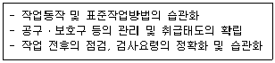
- 지식교육
- 기능교육
- 태도교육
- 문제해결교육
(정답률: 77%)
7. 새로운 자료나 교재를 제시하고, 문제점을 피교육자로 하여금 제기하도록 하거나 의견을 여러 가지 방법으로 발표하게 하여 청중과 토론자간 활발한 의견 개진과 합의를 도출해가는 토의방법은?
- 포럼(Forum)
- 심포지엄(Symposium)
- 자유토의(Free discussion)
- 패널 디스커션(Panel discussion)
(정답률: 78%)
8. 다음 중 불안전한 행동에 속하지 않는 것은?
- 보호구 미착용
- 부적절한 도구 사용
- 방호장치 미설치
- 안전장치 기능 제거
(정답률: 64%)
9. 다음 중 안전보건관리규정에 반드시 포함되어야 할 사항으로 볼 수 없는 것은?
- 작업장 보건관리
- 재해코스트 분석 방법
- 사고 조사 및 대책 수립
- 안전ㆍ보건 관리조직과 그 직무
(정답률: 78%)
10. 산업안전보건법령상 잠함(潛函) 또는 잠수작업 등 높은 기압에서 하는 작업에 종사하는 근로자의 근로제한시간으로 옳은 것은?
- 1일 6시간, 1주 34시간 초과금지
- 1일 6시간, 1주 36시간 초과금지
- 1일 8시간, 1주 40시간 초과금지
- 1일 8시간, 1주 44시간 초과금지
(정답률: 76%)
11. 다음 중 산업 재해의 분석 및 평가를 위하여 재해발생 건수 등의 추이에 대해 한계선을 설정하여 목표 관리를 수행하는 재해통계 분석기법은?
- 폴리건(polygon)
- 관리도(control chart)
- 파레토도(pareto diagram)
- 특성요인도(cause & effect diagram)
(정답률: 73%)
12. 다음 중 헤드십(head-ship)의 특성이 아닌 것은?
- 지휘형태는 권위주의적이다.
- 권한행사는 임명된 헤드이다.
- 부하와의 사회적 간격은 넓다.
- 상관과 부하와의 관계는 개인적인 영향이다.
(정답률: 85%)
13. 다음 중 산업안전보건법령상 의무안전인증대상 기계ㆍ기구 및 설비, 방호장치에 해당하지 않는 것은?
- 전단기
- 압력용기
- 동력식 수동대패용 칼날 접촉 방지장치
- 방폭구조(防爆構造) 전기기계ㆍ기구 및 부품
(정답률: 59%)
14. 학습지도의 원리에 있어 다음 설명에 해당하는 것은?
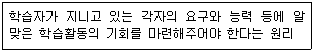
- 직관의 원리
- 자기활동의 원리
- 개별화의 원리
- 사회화의 원리
(정답률: 79%)
15. 다음 중 브레인스토밍(Brain-storming)기법의 4원칙에 관한 설명으로 틀린 것은?
- 한 사람이 많은 의견을 제시할 수 있다.
- 타인의 의견을 수정하여 발언할 수 있다.
- 타인의 의견에 대하여 비판, 비평하지 않는다.
- 의견을 발언할 때에는 주어진 요건에 맞추어 발언한다.
(정답률: 87%)
16. 다음 중 부주의의 발생 원인별 대책방법이 올바르게 짝지어진 것은?
- 소질적 문제 - 안전교육
- 경험, 미경험 - 적성배치
- 의식의 우회 - 작업환경 개선
- 작업순서의 부적합 - 인간공학적 접근
(정답률: 61%)
17. 다음 중 산업안전보건법령상 [그림]에 해당하는 안전ㆍ보건표지의 명칭으로 옳은 것은?
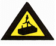
- 물체이동 경고
- 양중기운행 경고
- 낙하위험 경고
- 매달린물체 경고
(정답률: 76%)
18. 다음과 같은 경우 산업재해기록ㆍ분류 기준에 따라 분류한 재해의 발생형태로 옳은 것은?
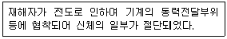
- 전도
- 협착
- 충돌
- 절단
(정답률: 58%)
19. 다음 중 무재해운동 추진의 3요소에 관한 설명과 가장 거리가 먼 것은?
- 모든 재해는 잠재요인을 사전에 발견ㆍ파악ㆍ해결함으로써 근원적으로 산업재해를 없애야 한다.
- 안전보건은 최고경영자의 무재해 및 무질병에 대한 확고한 경영자세로 시작된다.
- 안전보건을 추진하는 데에는 관리감독자들의 생산 활동속에 안전보건을 실천하는 것이 중요하다.
- 안전보건은 각자 자신의 문제이며, 동시에 동료의 문제로서 직장의 팀 멤버와 협동 노력하여 자주적으로 추진하는 것이 필요하다.
(정답률: 71%)
20. 다음 중 작업을 하고 있을 때 긴급 이상상태 또는 돌발 사태가 되면 순간적으로 긴장하게 되어 판단능력의 둔화 또는 정지상태가 되는 것을 무엇이라고 하는가?
- 의식의 우회
- 의식의 과잉
- 의식의 단절
- 의식의 수준저하
(정답률: 66%)
2과목: 인간공학 및 시스템안전공학
21. 한 화학공장에는 24개의 공정제어회로가 있으며, 4000시간의 공정 가동 중 이 회로에는 14번의 고장이 발생하였고, 고장이 발생하였을 때마다 회로는 즉시 교체 되었다. 이 회로의 평균고장시간(MTTF)은 약 얼마인가?
- 6857시간
- 7571시간
- 8240시간
- 9800시간
(정답률: 62%)
22. 다음 중 제한된 실내 공간에서의 소음문제에 대한 대책으로 가장 적절하지 않는 것은?
- 진동부분의 표면을 줄인다.
- 소음에 적응된 인원으로 배치한다.
- 소음의 전달 경로를 차단한다.
- 벽, 천정, 바닥에 흡음재를 부착한다.
(정답률: 86%)
23. 평균고장시간이 4 × 108 시간인 요소 4개가 직렬체계를 이루었을 때 이 체계의 수명은 몇 시간인가?
- 1 × 108
- 4 × 108
- 8 × 108
- 16 × 108
(정답률: 48%)
24. 다음 중 산업안전보건법령에 따라 기계ㆍ기구 및 설비의 설치ㆍ이전 등으로 인해 유해ㆍ위험방지계획서를 제출 하여야 하는 대상에 해당하지 않는 것은?
- 공기압축기
- 건조설비
- 화학설비
- 가스집합 용접장치
(정답률: 57%)
25. 다음 중 layout의 원칙으로 가장 올바른 것은?
- 운반작업을 수작업화 한다.
- 중간 중간에 중복 부분을 만든다.
- 인간이나 기계의 흐름을 라인화 한다.
- 사람이나 물건의 이동거리를 단축하기 위해 기계 배치를 분산화 한다.
(정답률: 70%)
26. 다음 중 시스템 안전(system safety)에 대한 설명으로 가장 적절하지 않은 것은?
- 주로 시행착오에 의해 위험을 파악한다.
- 위험을 파악, 분석, 통제하는 접근방법이다.
- 수명주기 전반에 걸쳐 안전을 보장하는 것을 목표로 한다.
- 처음에는 국방과 우주항공 분야에서 필요성이 제기되었다.
(정답률: 65%)
27. 다음 중 인간공학 연구조사에 사용하는 기준의 구비조건과 가장 거리가 먼 것은?
- 적절성
- 무오염성
- 다양성
- 기준 척도의 신뢰성
(정답률: 69%)
28. FT에 사용되는 기호 중 더 이상의 세부적인 분류가 필요 없는 사상을 의미하는 기호는?(오류 신고가 접수된 문제입니다. 반드시 정답과 해설을 확인하시기 바랍니다.)
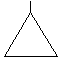
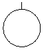
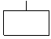
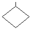
(정답률: 47%)
29. 다음 중 시스템 내에 존재하는 위험을 파악하기 위한 목적으로 시스템 설계 초기 단계에 수행되는 위험분석 기법은?
- SHA
- FMEA
- PHA
- MORT
(정답률: 77%)
30. 다음 중 인체의 피부감각에 있어 민감한 순서대로 나열된 것은?
- 압각 - 온각 - 냉각 - 통각
- 냉각 - 통각 - 온각 - 압각
- 온각 - 냉각 - 통각 - 압각
- 통각 - 압각 - 냉각 - 온각
(정답률: 60%)
31. Swain에 의해 분류된 휴먼에러 중 독립행동에 관한 분류에 해당하지 않는 것은?
- omission error
- commission error
- extraneous error
- command error
(정답률: 69%)
32. 다음 중 정량적 표시장치에 관한 설명으로 옳은 것은?
- 연속적으로 변화하는 양을 나타내는 데에는 일반적으로 아날로그보다 디지털 표시장치가 유리하다.
- 정확한 값을 읽어야 하는 경우 일반적으로 디지털보다 아날로그 표시장치가 유리하다.
- 동침(moving pointer)형 아날로그 표시장치는 바늘의 진행 방향과 증감 속도에 대한 인식적인 암시 신호를 얻는 것이 불가능한 단점이 있다.
- 동목(moving scale)형 아날로그 표시장치는 표시장치의 면적을 최소화할 수 있는 장점이 있다.
(정답률: 59%)
33. 다음 중 4지선다형 문제의 정보량은 얼마인가?
- 1bit
- 2bit
- 3bit
- 4bit
(정답률: 76%)
34. 다음 중 사람이 음원의 방향을 결정하는 주된 암시신호(cue)로 가장 적합하게 조합된 것은?
- 소리의 강도차와 진동수차
- 소리의 진동수차와 위상차
- 음원의 거리차와 시간차
- 소리의 강도차와 위상차
(정답률: 42%)
35. 다음의 결함수분석(FTA) 절차에서 가장 먼저 수행해야 하는 것은?
- cut set을 구한다.
- Top 사상을 정의한다.
- minimal cut set을 구한다.
- FT(fault tree)도를 작성한다.
(정답률: 77%)
36. 화학설비에 대한 안전성 평가방법 중 공장의 입지조건이나 공장 내 배치에 관한 사항은 어느 단계에서 하는가?
- 제1단계 : 관계자료의 작성 준비
- 제2단계 : 정성적 평가
- 제3단계 : 정량적 평가
- 제4단계 : 안전대책
(정답률: 75%)
37. 다음 중 가속도에 관한 설명으로 틀린 것은?
- 가속도란 물체의 운동 변화율이다.
- 1G는 자유 낙하하는 물체의 가속도인 9.8m/s2에 해당한다.
- 선형가속도는 운동속도가 일정한 물체의 방향 변화율 이다.
- 운동방향이 전후방인 선형가속의 영향은 수직방향보다 덜하다.
(정답률: 51%)
38. 다음 FT도에서 최소컷셋(Minimal cut set)으로만 올바르게 나열한 것은?
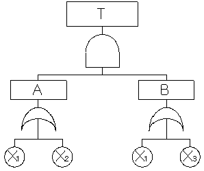
- [X1], [X2]
- [X1, X2], [X1, X3]
- [X1], [X2, X3]
- [X1, X2, X3]
(정답률: 63%)
39. 다음 중 의자 설계의 일반적인 원리로 가장 적절하지 않은 것은?
- 등근육의 정적 부하를 줄인다.
- 디스크가 받는 압력을 줄인다.
- 요부전만(腰部前灣)을 유지한다.
- 일정한 자세를 계속 유지하도록 한다.
(정답률: 75%)
40. 다음 중 조종-반응비율(C/R비)에 관한 설명으로 틀린 것은?
- C/R비가 클수록 민감한 제어장치이다.
- ‘X"가 조종장치의 변위량, "Y“가 표시장치의 변위량일 때 X/Y 로 표현된다.
- Knob C/R비는 손잡이 1회전시 움직이는 표시장치 이동 거리의 역수로 나타낸다.
- 최적의 C/R비는 제어장치의 종류나 표시장치의 크기, 허용오차 등에 의해 달라진다.
(정답률: 66%)
3과목: 기계위험방지기술
41. 다음 중 선반에서 작용하는 칩브레이커(chip breaker) 종류에 속하지 않는 것은?
- 연삭형
- 클램프형
- 쐐기형
- 자동조정식
(정답률: 46%)
42. 다음 중 위치제한형 방호장치에 해당되는 프레스 방호장치는?
- 수인식 방호장치
- 광전자식 방호장치
- 양수조작식 방호장치
- 손쳐내기식 방호장치
(정답률: 57%)
43. 다음 중 기계설비의 작업능률과 안전을 위한 배치(layout)의 3단계를 올바른 순서대로 나열한 것은?
- 지역배치 → 건물배치 → 기계배치
- 건물배치 → 지역배치 → 기계배치
- 기계배치 → 건물배치 → 지역배치
- 지역배치 → 기계배치 → 건물배치
(정답률: 80%)
44. 다음 중 셰이퍼(shaper)의 안전장치로 볼 수 없는 것은?
- 방책
- 칩받이
- 칸막이
- 잠금장치
(정답률: 62%)
45. 다음 중 산업안전보건법령상 연삭숫돌을 사용하는 작업의 안전수칙으로 틀린 것은?
- 연삭숫돌을 사용하는 경우 작업시작 전과 연삭숫돌을 교체한 후에는 1분 이상 시운전을 통해 이상 유무를 확인한다.
- 회전 중인 연삭숫돌이 근로자에게 위험을 미칠 우려가 있는 경우에 그 부위에 덮개를 설치하여야 한다.
- 연삭숫돌의 최고 사용회전속도를 초과하여 사용하여서는 안 된다.
- 측면을 사용하는 목적으로 하는 연삭숫돌 이외는 측면을 사용해서는 안 된다.
(정답률: 81%)
46. 가정용 LPG탱크와 같이 둥근 원통형의 압력용기에 내부압력 P가 작용하고 있다. 이때 압력용기 재료에 발생하는 원주응력(hoop stress)은 길이방향응력(longitudinal stress)의 얼마가 되는가?
- 1/2
- 2배
- 4배
- 5배
(정답률: 65%)
47. 다음 중 프레스기에 금형 설치 및 조정 작업시 준수하여야 할 안전수칙으로 틀린 것은?
- 금형을 부착하기 전에 하사점을 확인한다.
- 금형의 체결은 올바른 치공구를 사용하고 균등하게 체결한다.
- 슬라이드의 불시하강을 방지하기 위하여 안전블럭을 제거한다.
- 금형은 하형부터 잡고 무거운 금형의 받침은 인력으로 하지 않는다.
(정답률: 82%)
48. 산업안전보건법령상 회전시험을 하는 경우 미리 회전축의 재질 및 형상 등에 상응하는 종류의 비파괴검사를 해서 결함 유무를 확인하여야 하는 고속회전체의 대상으로 옳은 것은?
- 회전축의 중량이 1톤을 초과하고, 원주속도가 100m/s 이내인 것
- 회전축의 중량이 1톤을 초과하고, 원주속도가 120m/s 이상인 것
- 회전축의 중량이 0.5톤을 초과하고, 원주속도가 100m/s 이내인 것
- 회전축의 중량이 0.5톤을 초과하고, 원주속도가 120m/s 이상인 것
(정답률: 72%)
49. 다음과 같은 조건에서 원통용기를 제작했을 때 안전성(안전도)이 높은 것부터 순서대로 나열된 것은?
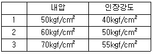
- 1 - 2 - 3
- 2 - 3 - 1
- 3 - 1 - 2
- 2 - 1 - 3
(정답률: 50%)
50. 롤러기 급정지장치 조작부에 사용하는 로프의 성능의 기준으로 적합한 것은? (단, 로프의 재질은 관련 규정에 적합한 것으로 본다.)
- 지름 1mm 이상의 와이어로프
- 지름 2mm 이상의 합성섬유로프
- 지름 3mm 이상의 합성섬유로프
- 지름 4mm 이상의 와이어로프
(정답률: 68%)
51. 인장강도가 35kg/mm2인 강판의 안전율이 4라면 허용응력은 몇 kg/mm2인가?
- 7.64
- 8.75
- 9.87
- 10.23
(정답률: 79%)
52. 다음 중 산업안전보건법령에 따른 원동기ㆍ회전축 등의 위험방지에 관한 사항으로 틀린 것은?
- 사업주는 기계의 원동기ㆍ회전축ㆍ기어ㆍ풀리ㆍ플라이휠ㆍ벨트 및 체인 등 근로자가 위험에 처할 우려가 있는 부위에 덮개ㆍ울ㆍ슬리브 및 건널다리 등을 설치하여야 한다.
- 사업주는 선반 등으로부터 돌출하여 회전하고 있는 가공물이 근로자에게 위험을 미칠 우려가 있는 경우에 덮개 또는 울 등을 설치하여야 한다.
- 사업주는 종이ㆍ천ㆍ비닐 및 와이어로프 등의 감김통 등에 의하여 근로자가 위험해질 우려가 있는 부위에 마개 또는 비상구 등을 설치하여야 한다.
- 사업주는 근로자가 분쇄기등의 개구로부터 가동 부분에 접촉함으로써 위해(危害)를 입을 우려가 있는 경우 덮개 또는 울 등을 설치하여야 한다.
(정답률: 76%)
53. 산소-아세틸렌 용접작업에 있어 고무호스에 역화 현상이 발생하였다면 다음 중 가장 먼저 취하여 할 조치사항은?
- 산소 밸브를 잠근다.
- 토치를 물에 넣는다.
- 아세틸렌 밸브를 잠근다.
- 산소 밸브 및 아세틸렌 밸브를 동시에 잠근다.
(정답률: 73%)
54. 다음 중 산업안전보건법령상 아세틸렌 용접장치를 사용하여 금속의 용접ㆍ용단 또는 가열작업을 하는 경우 게이지 압력은 얼마를 초과하는 압력의 아세틸렌을 발생시켜 사용하여서는 아니 되는가?
- 98kPa
- 127kPa
- 147kPa
- 196kPa
(정답률: 81%)
55. 프레스기의 SPM(stroke per minute)이 200이고, 클러치의 맞물림 개소수가 6인 경우 양수기동식 방호장치의 설치거리는 얼마인가?(오류 신고가 접수된 문제입니다. 반드시 정답과 해설을 확인하시기 바랍니다.)
- 120mm
- 200mm
- 320mm
- 400mm
(정답률: 60%)
56. 와이어로프의 꼬임은 일반적으로 특수로프를 제외하고는 보통 꼬임(Ordinary Lay)과 랭 꼬임(Lang's Lay)으로 분류할 수 있다. 다음 중 보통 꼬임에 관한 설명으로 틀린 것은?
- 킹크가 잘 생기지 않는다.
- 내마모성, 유연성, 저항성이 우수하다.
- 로프의 변형이나 하중을 걸었을 때 저항성이 크다.
- 스트랜드의 꼬임 방향과 로프의 꼬임 방향이 반대이다.
(정답률: 62%)
57. 다음 중 산업안전보건법령상 보일러에 설치하는 압력방출 장치에 대하여 검사 후 봉인에 사용되는 재료로 가장 적합한 것은?
- 납
- 주석
- 구리
- 알루미늄
(정답률: 77%)
58. 다음 중 연삭숫돌의 파괴원인과 가장 거리가 먼 것은?
- 외부의 충격을 받았을 때
- 플랜지가 현저히 작을 때
- 회전력이 결합력보다 클 때
- 내ㆍ외면의 플랜지 지름이 동일할 때
(정답률: 72%)
59. 진동에 의한 설비진단법 중 정상, 비정상, 악화의 정도를 판단하기 위한 방법이 아닌 것은?
- 상호 판단
- 비교 판단
- 절대 판단
- 평균 판단
(정답률: 56%)
60. 롤러의 급정지를 위한 방호장치를 설치하고자 한다. 앞면롤러 직경이 36cm 이고, 분당회전속도가 50rpm 이라면 급정지거리는 약 얼마 이내이어야 하는가? (단, 무부하동작에 해당한다.)
- 45cm
- 50cm
- 55cm
- 60cm
(정답률: 43%)
4과목: 전기위험방지기술
61. 다음 중 감전 재해자가 발생하였을 때 취하여야 할 최우선 조치는? (단, 감전자가 질식상태라 가정함.)
- 우선 병원으로 이동시킨다.
- 의사의 왕진을 요청한다.
- 심폐소생술을 실시한다.
- 부상 부위를 치료한다.
(정답률: 82%)
62. 이동하여 사용하는 전기기계기구의 금속제 외함 등에 제1종 접지공사를 하는 경우, 접지선 중 가요성을 요하는 부분의 접지선 종류와 단면적의 기준으로 옳은 것은?(관련 규정 개정전 문제로 여기서는 기존 정답인 4번을 누르면 정답 처리됩니다. 자세한 내용은 해설을 참고하세요.)
- 다심코드, 0.75mm2 이상
- 다심캡타이어 케이블, 2.5mm2 이상
- 3종 클로르프렌캡타이어 케이블, 4mm2 이상
- 3종 클로르프렌캡타이어 케이블, 10mm2 이상
(정답률: 54%)
63. 인체의 전기저항을 500Ω 이라 한다면 심실세동을 일으키는 위험에너지는 몇 [J]인가? (단, 달지엘(DALZIEL)주장, 통전시간은 1초, 체중은 60kg 정도이다.)
- 13.2
- 13.4
- 13.6
- 14.6
(정답률: 72%)
64. 6600/100 V, 15 kVA의 변압기에서 공급하는 저압 전선로의 허용 누설전류의 최대값[A]은?
- 0.025
- 0.045
- 0.075
- 0.085
(정답률: 53%)
65. 저압 및 고압선을 직접 매설식으로 매설할 때 중량물의 압력을 받지 않는 장소에서의 매설깊이는?(오류 신고가 접수된 문제입니다. 반드시 정답과 해설을 확인하시기 바랍니다.)
- 100cm 이상
- 90cm 이상
- 70cm 이상
- 60cm 이상
(정답률: 37%)
66. 방폭구조와 기호의 연결이 옳지 않은 것은?
- 압력방폭구조 : p
- 내압방폭구조 : d
- 안전증방폭구조 : s
- 본질안전방폭구조 : ia 또는 ib
(정답률: 73%)
67. 전로의 사용전압이 380 V 인 경우 전선로의 전선 상호간 및 전로와 대지 사이의 절연저항은 몇 [MΩ] 이상이어야 하는가?(관련 규정 개정전 문제로 여기서는 기존 정답인 2번을 누르면 정답 처리됩니다. 자세한 내용은 해설을 참고하세요.)
- 0.4 MΩ
- 0.3 MΩ
- 0.2 MΩ
- 0.1 MΩ
(정답률: 68%)
68. 폭발 위험장소의 전기설비에 공급하는 전압으로써 안전초저압(Safety extra-low voltage)의 범위는?
- 교류 50 V, 직류 120 V를 각각 넘지 않는다.
- 교류 30 V, 직류 42 V를 각각 넘지 않는다.
- 교류 30 V, 직류 110 V를 각각 넘지 않는다.
- 교류 50 V, 직류 80 V를 각각 넘지 않는다.
(정답률: 43%)
69. 정전기 재해의 방지를 위하여 배관내 액체의 유속의 제한이 필요하다. 배관의 내경과 유속 제한 값으로 적절하지 않은 것은?
- 관내경(mm) : 25, 제한유속(m/s) : 6.5
- 관내경(mm) : 50, 제한유속(m/s) : 3.5
- 관내경(mm) : 100, 제한유속(m/s) : 2.5
- 관내경(mm) : 200, 제한유속(m/s) : 1.8
(정답률: 46%)
70. 다음 물질 중 정전기에 의한 분진 폭발을 일으키는 최소발화(착화) 에너지가 가장 작은 것은?
- 마그네슘
- 폴리에틸렌
- 알루미늄
- 소맥분
(정답률: 42%)
71. 단로기를 사용하는 주된 목적은?
- 변성기의 개폐
- 이상전압의 차단
- 과부하 차단
- 무부하 선로의 개폐
(정답률: 65%)
72. 그림과 같은 설비에 누전되었을때 인체가 접촉하여도 안전하도록 ELB를 설치하려고 한다. 가장 적당한 누전차단기의 정격은?
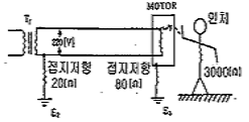
- 30 mA, 0.1초
- 60 mA, 0.1초
- 90 mA, 0.1초
- 120 mA, 0.1초
(정답률: 72%)
73. 정전기에 관련한 설명으로 잘못된 것은?
- 정전유도에 의한 힘은 반발력이다.
- 발생한 정전기와 완화한 정전기의 차가 마찰을 받은 물체에 축적되는 현상을 대전이라 한다.
- 같은 부호의 전하는 반발력이 작용한다.
- 겨울철에 나일론소재 셔츠 등을 벗을 때 경험한 부착 현상이나 스파크 발생은 박리대전현상이다.
(정답률: 52%)
74. 접지공사의 종류 및 접지선 굵기와 접지저항이 올바른 것은?(관련 규정 개정전 문제로 여기서는 기존 정답인 4번을 누르면 정답 처리됩니다. 자세한 내용은 해설을 참고하세요.)
- 제1종 : 2.5mm2 이상 연동선, 10 Ω이하
- 제2종 : 4.0mm2 이상 연동선, 100 Ω이하
- 제3종 : 1.5mm2 이상 연동선, 10 Ω이하
- 특별 제3종 : 2.5mm2 이상 연동선, 10 Ω이하
(정답률: 59%)
75. 활선작업 중 다른 공사를 하는 것에 대한 안전조치는?
- 동일주 및 인접주에서의 다른 작업은 금한다.
- 인접주에서는 다른 작업이 가능하다.
- 동일 배전선에서는 관계가 없다.
- 동일주에서는 다른 작업이 가능하다.
(정답률: 77%)
76. 전기기기 방폭의 기본 개념이 아닌 것은?
- 점화원의 방폭적 격리
- 전기기기의 안전도 증강
- 점화능력의 본질적 억제
- 전기설비 주위 공기의 절연능력 향상
(정답률: 67%)
77. 정전기 발생에 영향을 주는 요인과 관계가 가장 적은 것은?
- 물체의 표면상태
- 접촉면적 및 압력
- 분리속도
- 물의 음이온
(정답률: 75%)
78. 다음 중 직접 접촉에 의한 감전방지 방법으로 적절하지 않은 것은?
- 충전부가 노출되지 않도록 폐쇄형 외함이 있는 구조로 할 것
- 충전부에 충분한 절연효과가 있는 방호망 또는 절연 덮개를 설치할 것
- 충전부는 출입이 용이한 전개된 장소에 설치하고 위험표시 등의 방법으로 방호를 강화할 것
- 충전부는 내구성이 있는 절연물로 완전히 덮어 감쌀 것
(정답률: 75%)
79. 정전기 방전에 의한 폭발로 추정되는 사고를 조사함에 있어서 필요한 조치가 아닌 것은?
- 가연성 분위기 규명
- 전하발생 부위 및 축적 기구 규명
- 방전에 따른 점화 가능성 평가
- 사고현장의 방전흔적 조사
(정답률: 52%)
80. 다음 중 비전도성 가연성 분진은?
- 아연
- 염료
- 코크스
- 카본블랙
(정답률: 43%)
5과목: 화학설비위험방지기술
81. 다음 중 가연성 가스이며 독성 가스에 해당하는 것은?
- 수소
- 프로판
- 산소
- 일산화탄소
(정답률: 72%)
82. 다음 중 대기압상의 공기ㆍ아세틸렌 혼합가스의 최소발화에너지(MIE)에 관한 설명으로 옳은 것은?
- 압력이 클수록 MIE는 증가한다.
- 불활성물질의 증가는 MIE를 감소시킨다.
- 대기압 상의 공기ㆍ아세틸렌 혼합가스의 경우는 약 9%에서 최대값을 나타낸다.
- 일반적으로 화학양론농도 보다도 조금 높은 농도일 때에 최소값이 된다.
(정답률: 44%)
83. 다음 중 소염거리(quenching distance) 또는 소염직경(quenching diameter)을 이용한 것과 가장 거리가 먼 것은?
- 화염방지기
- 역화방지기
- 안전밸브
- 방폭전기기기
(정답률: 48%)
84. 산업안전보건법에서 분류한 위험물질의 종류와 이에 해당되는 것을 올바르게 짝지어진 것은?
- 부식성 물질 - 황화인ㆍ적린
- 산화성 액체 및 산화성 고체 - 중크롬산
- 폭발성 물질 및 유기과산화물 - 마그네슘분말
- 물반응성 물질 및 인화성 고체 - 하이드라진 유도체
(정답률: 52%)
85. 다음 중 증기운폭발에 대한 설명으로 옳은 것은?
- 폭발효율은 BLEVE 보다 크다.
- 증기운의 크기가 증가하면 점화 확률이 높아진다.
- 증기운폭발의 방지대책로 가장 좋은 방법은 점화방지용 안전장치의 설치이다.
- 증기와 공기의 난류 혼합, 방출점으로부터 먼 지점에서 증기운의 점화는 폭발의 충격을 감소시킨다.
(정답률: 47%)
86. 벤젠(C6H6)의 공기 중 폭발하한계는 약 몇 vol%인가?
- 1.0
- 1.5
- 2.0
- 2.5
(정답률: 58%)
87. 폭발(연소)범위가 2.2vol% ~ 9.5vol% 인 프로판(C3H8)의 최소산소농도(MOC)값은 몇 vol% 인가? (단, 계산은 화학양론식을 이용하여 추정한다.)
- 8
- 11
- 14
- 16
(정답률: 60%)
88. 다음 중 불활성가스 첨가에 의한 폭발방지대책의 설명으로 가장 적절하지 않은 것은?
- 가연성 혼합가스에 불활성가스를 첨가하면 가연성 가스의 농도가 폭발하한계 이하로 되어 폭발이 일어나지 않는다.
- 가연성 혼합가스에 불활성가스를 첨가하면 산소농도가 폭발한계산소농도 이하로 되어 폭발을 예방할 수 있다.
- 폭발한계산소농도는 폭발성을 유지하기 위한 최소의 산소농도로서 일반적으로 3성분 중의 산소농도로 나타낸다.
- 불활성가스 첨가의 효과는 물질에 따라 차이가 발생 하는데 이는 비열의 차이 때문이다.
(정답률: 38%)
89. 8% NaOH 수용액과 5% NaOH 수용액을 반응기에 혼합하여 6% 100kg의 NaOH 수용액을 만들려면 각각 몇 kg의 NaOH 수용액이 필요한가?
- 5% NaOH 수용액 : 50.5kg, 8% NaOH 수용액 : 49.5kg
- 5% NaOH 수용액 : 56.8kg, 8% NaOH 수용액 : 43.2kg
- 5% NaOH 수용액 : 66.7kg, 8% NaOH 수용액 : 33.3kg
- 5% NaOH 수용액 : 73.4kg, 8% NaOH 수용액 : 26.6kg
(정답률: 70%)
90. 다음 [보기]에서 일반적인 자동제어 시스템의 작동순서를 바르게 나열한 것은?
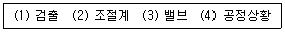
- (1) → (2) → (4) → (3)
- (4) → (1) → (2) → (3)
- (2) → (4) → (1) → (3)
- (3) → (2) → (4) → (1)
(정답률: 73%)
91. 다음 중 누설 발화형 폭발재해의 예방 대책으로 가장 적합하지 않은 것은?
- 발화원 관리
- 밸브의 오동작 방지
- 불활성 가스의 치환
- 누설물질의 검지 경보
(정답률: 60%)
92. 다음 중 압축기 운전시 토출압력이 갑자기 증가하는 이유로 가장 적절한 것은?
- 윤활유의 과다
- 피스톤 링의 가스 누설
- 토출관 내에 저항 발생
- 저장조 내 가스압의 감소
(정답률: 74%)
93. 다음 중 가스연소의 지배적인 특성으로 가장 적합한 것은?
- 증발연소
- 표면연소
- 액면연소
- 확산연소
(정답률: 76%)
94. 다음 중 공정안전보고서 심사기준에 있어 공정배관계장도(P&ID)에 반드시 표시되어야 할 사항이 아닌 것은?
- 물질 및 열수지
- 안전밸브의 크기 및 설정압력
- 동력기계와 장치의 주요 명세
- 장치의 계측제어 시스템과의 상호관계
(정답률: 42%)
95. 건조설비의 구조는 구조부분, 가열장치, 부속설비로 구성되는데 다음 중 “구조부분”에 속하는 것은?
- 보온판
- 열원장치
- 소화장치
- 전기설비
(정답률: 48%)
96. 다음 중 불활성화(퍼지)에 관한 설명으로 틀린 것은?
- 압력퍼지가 진공퍼지에 비해 퍼지시간이 길다.
- 사이폰 퍼지가스의 부피는 용기의 부피와 같다.
- 진공퍼지는 압력퍼지보다 인너트 가스 소모가 적다.
- 스위프 퍼지는 용기나 장치에 압력을 가하거나 진공으로 할 수 없을 때 사용된다.
(정답률: 51%)
97. 산업안전보건법령상 화학설비로서 가솔린이 남아 있는 화학설비에 등유나 경유를 주입하는 경우 그 액표면의 높이가 주입관의 선단의 높이를 넘을 때까지 주입속도는 얼마 이하로 하여야 하는가?
- 1m/s
- 4m/s
- 8m/s
- 10m/s
(정답률: 60%)
98. 다음 중 메타인산(HPO3)에 의한 방진효과를 가진 분말소화약제의 종류는?
- 제1종 분말소화약제
- 제2종 분말소화약제
- 제3종 분말소화약제
- 제4종 분말소화약제
(정답률: 64%)
99. 다음 중 전기설비에 의한 화재에 사용할 수 없는 소화기의 종류는?
- 포소화기
- 이산화탄소소화기
- 할로겐화합물소화기
- 무상수(霧狀水)소화기
(정답률: 44%)
100. 다음 중 탱크내 작업시 복장에 관한 설명으로 틀린 것은?
- 불필요하게 피부를 노출시키지 말 것
- 작업복의 바지 속에는 밑을 집어넣지 말 것
- 작업모를 쓰고 긴팔의 상의를 반듯하게 착용할 것
- 수분의 흡수를 방지하기 위하여 유지가 부착된 작업복을 착용할 것
(정답률: 66%)
6과목: 건설안전기술
101. 추락방지망 설치시 그물코의 크기가 10cm인 매듭 있는 방망의 신품에 대한 인장강도 기준으로 옳은 것은?
- 100kgf 이상
- 200kgf 이상
- 300kgf 이상
- 400kgf 이상
(정답률: 79%)
102. 백호우(Backhoe)의 운행방법에 대한 설명으로 옳지 않은 것은?
- 경사로나 연약지반에서는 무한궤도식 보다는 타이어식이 안전하다.
- 작업계획서를 작성하고 계획에 따라 작업을 실시하여야 한다.
- 작업장소의 지형 및 지반상태 등에 적합한 제한속도를 정하고 운전자로 하여금 이를 준수하도록 하여야 한다.
- 작업 중 승차석 외의 위치에 근로자를 탑승시켜서는 안 된다.
(정답률: 78%)
103. 중량물 운반시 크레인에 매달아 올릴 수 있는 최대 하중으로부터 달아올리기 기구의 중량에 상당하는 하중을 제외한 하중은?
- 정격 하중
- 적재 하중
- 임계 하중
- 작업 하중
(정답률: 76%)
104. 일반건설공사(갑)로서 대상액이 5억원 이상 50억원 미만인 경우에 산업안전보건관리비의 비율(가) 및 기초액(나)으로 옳은 것은?(관련 규정 개정전 문제로 여기서는 기존 정답인 1번을 누르면 정답 처리됩니다. 자세한 내용은 해설을 참고하세요.)
- (가) 1.81%, (나) 3,294,000원
- (가) 1.95%, (나) 3,498,000원
- (가) 2.15%, (나) 1,647,000원
- (가) 1.49%, (나) 4,211,000원
(정답률: 69%)
1⑤. 산업안전보건법상 차량계 하역운반기계 등에 단위화물의 무게가 100kg 이상인 화물을 싣는 작업 또는 내리는 작업을 하는 경우에 해당 작업 지휘자가 준수하여야 할 사항과 가장 거리가 먼 것은?
- 작업순서 및 그 순서마다의 작업방법을 정하고 작업을 지휘할 것
- 기구와 공구를 점검하고 불량품을 제거할 것
- 대피방법을 미리 교육하는 일
- 로프 풀기 작업 또는 덮개 벗기기 작업은 적재함의 화물이 떨어질 위험이 없음을 확인한 후에 하도록 할 것
(정답률: 70%)
106. 투하설비 설치와 관련된 아래 표의 ( )에 적합한 것은?
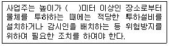
- 1
- 2
- 3
- 4
(정답률: 43%)
107. 토석붕괴의 원인 중 외적 원인에 해당되지 않는 것은?
- 토석의 강도 저하
- 작업진동 및 반복하중의 증가
- 사면, 법면의 경사 및 기울기의 증가
- 절토 및 성토 높이의 증가
(정답률: 69%)
108. 지반조건에 따른 지반개량공법 중 점성토 개량공법과 가장 거리가 먼 것은?
- 바이브로 플로테이션공법
- 치환공법
- 압밀공법
- 생석회 말뚝 공법
(정답률: 57%)
109. 비계의 높이가 2m 이상인 작업장소에 설치하는 작업발판의 설치기준으로 옳지 않은 것은?
- 작업발판의 폭은 40cm 이상으로 한다.
- 작업발판재료는 뒤집히거나 떨어지지 않도록 하나 이상의 지지물에 연결하거나 고정시킨다.
- 발판재료 간의 틈은 3cm 이하로 한다.
- 작업발판의 지지물은 하중에 의하여 파괴될 우려가 없는 것을 사용한다.
(정답률: 70%)
110. 물체가 떨어지거나 날아올 위험이 있을 때의 재해 예방대책과 거리가 먼 것은?
- 낙하물방지망 설치
- 출입금지구역 설정
- 안전대 착용
- 안전모 착용
(정답률: 72%)
111. 터널 지보공을 설치한 때 수시 점검하여 이상을 발견 시 즉시 보강하거나 보수해야 할 사항이 아닌 것은?
- 부재의 손상ㆍ변형ㆍ부식ㆍ변위ㆍ탈락의 유무 및 상태
- 부재의 긴압의 정도
- 부재의 접속부 및 교차부의 상태
- 계측기 설치상태
(정답률: 72%)
112. 콘크리트 타설작업시 안전에 대한 유의사항으로 옳지 않은 것은?
- 콘크리트 치는 도중에는 지보공ㆍ거푸집 등의 이상유무를 확인한다.
- 높은 곳으로부터 콘크리트를 타설할 때는 호퍼로 받아 거푸집내에 꽂아 넣는 슈트를 통해서 부어 넣어야 한다.
- 진동기를 가능한 한 많이 사용할수록 거푸집에 작용하는 측압상 안전하다.
- 콘크리트를 한 곳에만 치우쳐서 타설하지 않도록 주의한다.
(정답률: 79%)
113. 거푸집동바리 등을 조립하는 경우에 준수하여야 하는 기준으로 옳지 않은 것은?
- 동바리로 사용하는 파이프 서포트를 이어서 사용하는 경우에는 3개 이상의 볼트 또는 전용철물을 사용하여 이을 것
- 동바리로 사용하는 강관은 높이 2m 이내마다 수평연결재를 2개 방향으로 만들 것
- 깔목의 사용, 콘크리트 타설, 말뚝박기 등 동바리의 침하를 방지하기 위한 조치를 할 것
- 동바리로 사용하는 파이프 서포트를 3개 이상 이어서 사용하지 말 것
(정답률: 68%)
114. 건물 해체용 기구가 아닌 것은?
- 압쇄기
- 스크레이퍼
- 잭
- 철해머
(정답률: 69%)
115. 단관비계를 조립하는 경우 벽이음 및 버팀을 설치할 때의 수평방향 조립간격 기준으로 옳은 것은?
- 3m
- 5m
- 6m
- 8m
(정답률: 66%)
116. 흙막이 붕괴원인 중 보일링(boiling)현상이 발생하는 원인에 관한 설명으로 옳지 않은 것은?
- 지반을 굴착시, 굴착부와 지하수위 차가 있을 때 주로 발생한다.
- 연약 사질토 지반의 경우 주로 발생한다.
- 굴착저면에서 액상화 현상에 기인하여 발생한다.
- 연약 점토질 지반에서 배면토의 중량이 굴착부 바닥의 지지력 이상이 되었을 때 주로 발생한다.
(정답률: 58%)
117. 다음은 강관을 사용하여 비계를 구성하는 경우에 대한 내용이다. 빈칸에 들어갈 내용으로 옳은 것은?(관련 규정 개정전 문제로 여기서는 기존 정답인 3번을 누르면 정답 처리됩니다. 자세한 내용은 해설을 참고하세요.)
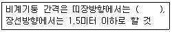
- 1.2m 이상 1.5m 이하
- 1.2m 이상 2.0m 이하
- 1.5m 이상 1.8m 이하
- 1.5m 이상 2.0m 이하
(정답률: 70%)
118. 취급ㆍ운반의 원칙으로 옳지 않은 것은?
- 운반 작업을 집중하여 시킬 것
- 곡선 운반을 할 것
- 생산을 최고로 하는 운반을 생각할 것
- 연속 운반을 할 것
(정답률: 76%)
119. 터널 굴착공사에서 뿜어 붙이기 콘크리트의 효과를 설명한 것으로 옳지 않은 것은?
- 암반의 크랙(crack)을 보강한다.
- 굴착면의 요철을 늘리고 응력집중을 최대한 증대시킨다.
- Rock Bolt의 힘을 지반에 분산시켜 전달한다.
- 굴착면을 덮음으로써 지반의 침식을 방지한다.
(정답률: 61%)
120. 다음은 시스템 비계구성에 관한 내용이다. ( )안에 들어갈 말로 옳은 것은?
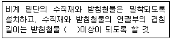
- 전체길이의 4분의 1
- 전체길이의 3분의 1
- 전체길이의 3분의 2
- 전체길이의 2분의 1
(정답률: 68%)
강도율은 총휴업일수를 평균근로자수와 근무일수로 나눈 값이다. 따라서 A 사업장의 강도율은 3650 / (450 * 300) = 0.256 이다. 이 값을 100으로 곱하면 강도율이 25.6%임을 알 수 있다.
하지만 문제에서는 근무시간이 9시간이므로, 도수율과 강도율을 각각 9로 나눠줘야 한다. 따라서 최종적으로 A 사업장의 도수율은 0.017 / 9 = 0.0019, 강도율은 0.256 / 9 = 0.0284 이다. 이 값을 100으로 곱하면 도수율이 0.19%, 강도율이 2.84%임을 알 수 있다.
하지만 보기에서는 강도율이 2.55%로 주어졌으므로, 이는 계산상의 오차로 인한 값일 가능성이 높다. 따라서 정답은 "도수율 : 19.75, 강도율 : 2.47" 이다.